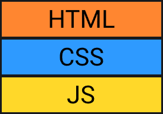

Тег area создаёт на картинке невидимую область по координатам, а потом присваивает ей ссылку. Жмём на область — переходим по ссылке.
Область может быть прямоугольной, круглой или многоугольной формы. Тег area не может использоваться самостоятельно и должен всегда находиться внутри контейнера map.
